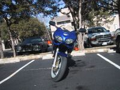
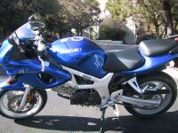
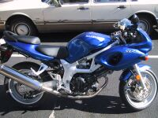
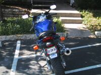

2002 Suzuki SV650S
Here's some pictures of my new (2/02) SV650S. It's
quite a step up from my 1999 Kawasaki Ninja 500 - now I just need to wait
for the weather to warm up!




Modifications
I've been modifying the bike lately - here's some pictures with the
updates.


Done:
- Scorpion stainless steel slip-on
- Flush front turn signals
- Frame sliders
- Competition Werkes Fender Eliminator kit
- Xenon headlights
- 15W front fork oil (really helps with brake diving)
- MSF Experienced Rider Course
- Swap out position light with a blue PIAA 194 bulb
- Track day
Todo:
- More track days
- New bike!
Home